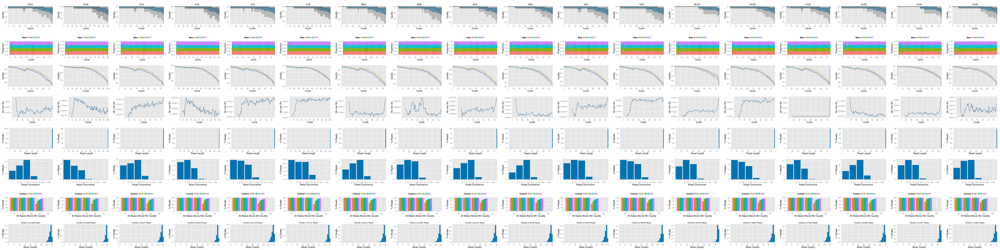
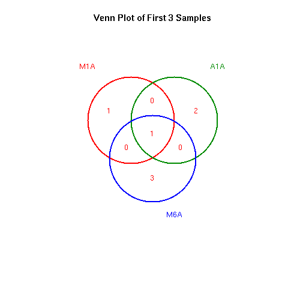
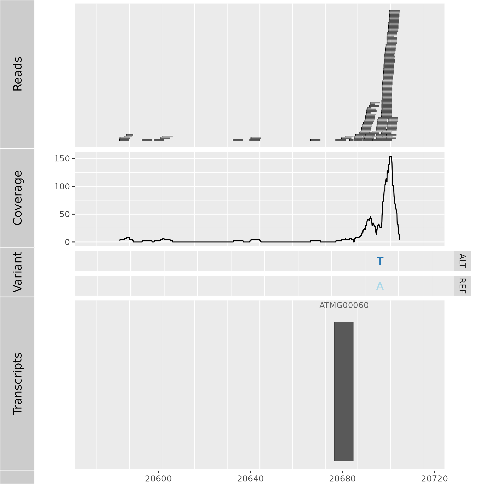

VAR-Seq Workflow Template
24 minute read
Introduction
Users want to provide here background information about the design of their VAR-Seq project.
This report describes the analysis of a VAR-Seq project studying the genetic differences among several strains … from organism ….
Experimental design
Typically, users want to specify here all information relevant for the analysis of their VAR-Seq study. This includes detailed descriptions of FASTQ files, experimental design, reference genome, gene annotations, etc.
Workflow environment
Generate workflow environment
systemPipeRdata package is a helper package to generate a fully populated systemPipeR workflow environment in the current working directory with a single command. All the instruction for generating the pre-configured workflow templates are provide in the systemPipeRdata vignette.
systemPipeRdata::genWorkenvir(workflow = "varseq", mydirname = "varseq")
setwd("varseq")
This step can be skipped if you already have the environment to run the analysis. If not, you can run it, and it will create the directory structure and populate all the necessary param and demo data files.
After building and loading the workflow environment generated by genWorkenvir
from systemPipeRdata all data inputs are stored in
a data/ directory and all analysis results will be written to a separate
results/ directory, while the systemPipeVARseq.Rmd script and the targets
file are expected to be located in the parent directory. The R session is expected
to run from this parent directory. Additional parameter files are stored under param/.
To work with real data, users want to organize their own data similarly
and substitute all test data for their own data. To rerun an established
workflow on new data, the initial targets file along with the corresponding
FASTQ files are usually the only inputs the user needs to provide.
For more details, please consult the documentation
here.
More information about the targets files from systemPipeR can be found here.
Build the Workflow with a single command
This template provides some common steps for a VARseq workflow. One can add, remove,
modify workflow steps by operating on the SYSargsList workflow object.
For more details of all the features and utilities, please consult the main vignette.
To initiate a VARseq workflow, this entire Rmarkdown file will be imported as a
SYSargsList workflow object, by using the importWF("systemPipeVARseq.Rmd") command.
In this template, code chunks with the option spr = TRUE' will be added to the workflow.
Other R code chunks without this option will be ignored. The option eval = FALSE
can be ignored when imported and build the workflow object. Please be aware of this
possibility.
The template can provide more than one alternative for each step, such as
different mapping methods, that will receive the mandatory or optional flag.
One can run just the mandatory steps, ALL, or optional steps when running
the workflow.
Also, each one of the steps can be run on compute clusters (compute option)
or on the current session, here called management session.
For the demonstration of this template, a management session will be chosen.
Workflow initialization
The other alternative is to initialize the workflow and append each of the steps in the workflow object.
sal <- SPRproject()
Required packages and resources
systemPipeR workflows can be designed and built from start to finish with a
single command, importing from an R Markdown file or stepwise in interactive
mode from the R console.
This tutorial will demonstrate how to build the workflow in an interactive mode,
appending each step. The workflow is constructed by connecting each step via
appendStep method. Each SYSargsList instance contains instructions needed
for processing a set of input files with a specific command-line or R software
and the paths to the corresponding outfiles generated by a particular tool/step.
The systemPipeR package needs to be loaded (H Backman and Girke 2016).
# Some samples in the test dataset do not work well in
# VARseq, and VARseq workflow takes long time to process
# each sample. To better test and speed up the test
# workflow, sample set is reduced to the first 13 samples.
# Please REMOVE the next two lines in your real analysis
cat(crayon::red$bold("Some samples in targets are removed for test workflow. Please change the template to disable this in your real analysis.\n"))
writeLines(readLines("targetsPE.txt")[1:13], "targetsPE.txt")
cat(crayon::blue$bold("To use this workflow, following R packages are expected:\n"))
cat(c("'GenomicFeatures", "VariantAnnotation", "GenomicFeatures",
"ggbio", "ggplot2'\n"), sep = "', '")
### pre-end
appendStep(sal) <- LineWise(code = {
library(systemPipeR)
}, step_name = "load_SPR")
FASTQ quality report
The following seeFastq and seeFastqPlot functions generate and plot a series of useful
quality statistics for a set of FASTQ files including per cycle quality box
plots, base proportions, base-level quality trends, relative k-mer
diversity, length, and occurrence distribution of reads, number of reads
above quality cutoffs and mean quality distribution. The results are
written to a png file named fastqReport.png.
This is the pre-trimming fastq report. Another post-trimming fastq report step is not included in the default. It is recommended to run this step first to decide whether the trimming is needed.
Please note that initial targets files are being used here. In this case,
it has been added to the first step, and later, we used the function getColumn
to extract a named vector.
appendStep(sal) <- LineWise(code = {
targets <- read.delim("targetsPE.txt", comment.char = "#")
updateColumn(sal, step = "load_SPR", position = "targetsWF") <- targets
fq_files <- getColumn(sal, "load_SPR", "targetsWF", column = 1)
fqlist <- seeFastq(fastq = fq_files, batchsize = 10000, klength = 8)
png("./results/fastqReport.png", height = 162, width = 288 *
length(fqlist))
seeFastqPlot(fqlist)
dev.off()
}, step_name = "fastq_report_pre", dependency = "load_SPR")

Figure 1: FASTQ quality report for 18 samples
Read preprocessing
Read trimming with Trimmomatic
Next, we need to populate the object created with the first step in the
workflow. Here, an example of how to perform this task using parameters template
files for trimming FASTQ files with Trimmomatic
software (Bolger, Lohse, and Usadel 2014).
For this step, the SYSargsList function has been used to build the command-line
and append to sal object. For more details of all the features and utilities,
please consult the main vignette.
If GATK (default) is used for variant calling, any type of fastq trimming is strongly depreciated. GATK have internal function to handle low quality posistions.
appendStep(sal) <- SYSargsList(step_name = "trimmomatic", targets = "targetsPE.txt",
wf_file = "trimmomatic/trimmomatic-pe.cwl", input_file = "trimmomatic/trimmomatic-pe.yml",
dir_path = "param/cwl", inputvars = c(FileName1 = "_FASTQ_PATH1_",
FileName2 = "_FASTQ_PATH2_", SampleName = "_SampleName_"),
dependency = c("fastq_report_pre"), run_step = "optional")
Preprocessing with preprocessReads function
The function preprocessReads allows to apply predefined or custom
read preprocessing functions to all FASTQ files referenced in a
SYSargsList container, such as quality filtering or adaptor trimming
routines. Internally, preprocessReads uses the FastqStreamer function from
the ShortRead package to stream through large FASTQ files in a
memory-efficient manner. The following example performs adaptor trimming with
the trimLRPatterns function from the Biostrings package.
Here, we are appending this step at the SYSargsList object created previously.
All the parameters are defined on the preprocessReads/preprocessReads-pe.yml file.
appendStep(sal) <- SYSargsList(step_name = "preprocessing", targets = "targetsPE.txt",
dir = TRUE, wf_file = "preprocessReads/preprocessReads-pe.cwl",
input_file = "preprocessReads/preprocessReads-pe.yml", dir_path = "param/cwl",
inputvars = c(FileName1 = "_FASTQ_PATH1_", FileName2 = "_FASTQ_PATH2_",
SampleName = "_SampleName_"), dependency = c("fastq_report_pre"),
run_step = "optional")
After the trimming step, the outfiles files can be used to generate the new
targets files containing the paths to the trimmed FASTQ files. The new targets
information can be used for the next workflow step instance, e.g. running the
NGS alignments with the trimmed FASTQ files.
The following example shows how one can design a custom read ‘preprocessReads’
function using utilities provided by the ShortRead package, and then run it
in batch mode with the ‘preprocessReads’ function. For here, it is possible to
replace the function used on the preprocessing step and modify the sal object.
Because it is a custom function, it is necessary to save the part in the R object,
and internally the preprocessReads.doc.R is loading the function. If the R object
is saved with a different name (here "param/customFCT.RData"), please replace
that accordingly in the preprocessReads.doc.R.
Please, note that this step is not added to the workflow, here just for demonstration.
First, we defined the function in the workflow:
appendStep(sal) <- LineWise(code = {
filterFct <- function(fq, cutoff = 20, Nexceptions = 0) {
qcount <- rowSums(as(quality(fq), "matrix") <= cutoff,
na.rm = TRUE)
# Retains reads where Phred scores are >= cutoff
# with N exceptions
fq[qcount <= Nexceptions]
}
save(list = ls(), file = "param/customFCT.RData")
}, step_name = "custom_preprocessing_function", dependency = "preprocessing")
After, we can edit the input parameter:
yamlinput(sal, "preprocessing")$Fct
yamlinput(sal, "preprocessing", "Fct") <- "'filterFct(fq, cutoff=20, Nexceptions=0)'"
yamlinput(sal, "preprocessing")$Fct ## check the new function
cmdlist(sal, "preprocessing", targets = 1) ## check if the command line was updated with success
FASTQ quality after Trimming
This is the post-trimming fastq quality report. If the trimming step is included, it is recommended to add this step to compare trimming of fastq before and after.
appendStep(sal) <- LineWise(code = {
fq_files <- getColumn(sal, "preprocessing", "outfiles", column = 1) ## get outfiles path
fqlist <- seeFastq(fastq = fq_files, batchsize = 10000, klength = 8)
png("./results/fastqReport_pos.png", height = 18, width = 4 *
length(fqlist))
seeFastqPlot(fqlist)
dev.off()
}, step_name = "fastq_report_pos", dependency = "trimmomatic",
run_step = "optional")
Read mapping with BWA-MEM
The NGS reads of this project are aligned against the reference genome
sequence using the highly variant tolerant short read aligner BWA-MEM
(Heng Li 2013; H. Li and Durbin 2009). The parameter settings of the aligner are
defined in the param/cwl/gatk/bwa-pe.cwl.
This test code uses untrimmed fastq files since the demo data is minimal and
limited. However, it is best to test with FASTQ quality report function provided
above to verify your real data first.
Build index and dictionary files for BWA and GATK
Build the index and dictionary files for BWA and GATK to run.
appendStep(sal) <- SYSargsList(step_name = "bwa_index", dir = FALSE,
targets = NULL, wf_file = "gatk/workflow_bwa-index.cwl",
input_file = "gatk/gatk.yaml", dir_path = "param/cwl", dependency = "load_SPR")
Create reference fasta dictionary.
appendStep(sal) <- SYSargsList(step_name = "fasta_index", dir = FALSE,
targets = NULL, wf_file = "gatk/workflow_fasta_dict.cwl",
input_file = "gatk/gatk.yaml", dir_path = "param/cwl", dependency = "bwa_index")
Create dictionary index.
appendStep(sal) <- SYSargsList(step_name = "faidx_index", dir = FALSE,
targets = NULL, wf_file = "gatk/workflow_fasta_faidx.cwl",
input_file = "gatk/gatk.yaml", dir_path = "param/cwl", dependency = "fasta_index")
Mapping reads with BWA
appendStep(sal) <- SYSargsList(step_name = "bwa_alignment", targets = "targetsPE.txt",
wf_file = "gatk/workflow_bwa-pe.cwl", input_file = "gatk/gatk.yaml",
dir_path = "param/cwl", inputvars = c(FileName1 = "_FASTQ_PATH1_",
FileName2 = "_FASTQ_PATH2_", SampleName = "_SampleName_"),
dependency = c("faidx_index"))
Read and alignment stats
The following provides an overview of the number of reads in each sample and how many of them aligned to the reference.
appendStep(sal) <- LineWise(code = {
bampaths <- getColumn(sal, step = "bwa_alignment", "outfiles",
column = "samtools_sort_bam")
fqpaths <- getColumn(sal, step = "bwa_alignment", "targetsWF",
column = "FileName1")
read_statsDF <- alignStats(args = bampaths, fqpaths = fqpaths,
pairEnd = TRUE)
write.table(read_statsDF, "results/alignStats.xls", row.names = FALSE,
quote = FALSE, sep = "\t")
}, step_name = "align_stats", dependency = "bwa_alignment", run_step = "optional")
Create symbolic links for viewing BAM files in IGV
The symLink2bam function creates symbolic links to view the BAM alignment files in a
genome browser such as IGV. The corresponding URLs are written to a file
with a path specified under urlfile in the results directory.
appendStep(sal) <- LineWise(code = {
bampaths <- getColumn(sal, step = "bwa_alignment", "outfiles",
column = "samtools_sort_bam")
symLink2bam(sysargs = bampaths, htmldir = c("~/.html/", "somedir/"),
urlbase = "http://cluster.hpcc.ucr.edu/~tgirke/", urlfile = "./results/IGVurl.txt")
}, step_name = "bam_urls", dependency = "bwa_alignment", run_step = "optional")
Variant calling
The following performs variant calling with GATK and BCFtools on a single
machine by runWF function for each sample sequentially. If a cluster compute
is available, running in parallel mode on a compute cluster can be performed by
runWF, making available the resources and choose run_session = "compute".
Not all users have a cluster system, so here to demonstrate an example of variant calling workflow, only single-machine commands are shown. For cluster jobs, please refer to our main vignette.
In addition, the user would choose only one variant caller here rather than running several ones. However, the workflow manager allows keeping multiple options available for running the analysis.
Variant calling with GATK
The following steps are based on GATK 4.1.1.0 Best Practice.
There are 10 individual steps where the user can choose where to jump in and where to skip.
All scripts are located at param/cwl/gatk. BQSR (Base Quality Score Recalibration)
and VQSR (Variant Quality Score Recalibration) are very specific
to a limited species like human, so this workflow does not support these steps.
Step1: fastq to ubam
Convert fastq files to bam files to prepare for the following step. It is very
important to specific your sequencing platform, default is illumina. User need
to change param/cwl/gatk/gatk_fastq2ubam.cwl if the platform is different. Platform information
is needed for the variant caller in later steps to correct calling parameters.
appendStep(sal) <- SYSargsList(step_name = "fastq2ubam", targets = "targetsPE.txt",
wf_file = "gatk/workflow_gatk_fastq2ubam.cwl", input_file = "gatk/gatk.yaml",
dir_path = "param/cwl", inputvars = c(FileName1 = "_FASTQ_PATH1_",
FileName2 = "_FASTQ_PATH2_", SampleName = "_SampleName_"),
dependency = c("faidx_index"))
Step2: Merge bam and ubam
This step merges a bam and ubam and creates a third bam file that contains
alignment information and remaining information that was removed by the aligner like BWA.
The removed information is essential for variant statistics calculation. Previous steps are
recommended, but variant calling can still be performed without these steps.
appendStep(sal) <- SYSargsList(step_name = "merge_bam", targets = c("bwa_alignment",
"fastq2ubam"), wf_file = "gatk/workflow_gatk_mergebams.cwl",
input_file = "gatk/gatk.yaml", dir_path = "param/cwl", inputvars = c(bwa_men_sam = "_bwasam_",
ubam = "_ubam_", SampleName = "_SampleName_"), rm_targets_col = c("preprocessReads_1",
"preprocessReads_2"), dependency = c("bwa_alignment",
"fastq2ubam"))
Step3: Sort bam files by genomic coordinates
Sort bam files by genomic coordinates.
appendStep(sal) <- SYSargsList(step_name = "sort", targets = "merge_bam",
wf_file = "gatk/workflow_gatk_sort.cwl", input_file = "gatk/gatk.yaml",
dir_path = "param/cwl", inputvars = c(merge_bam = "_mergebam_",
SampleName = "_SampleName_"), rm_targets_col = c("bwa_men_sam",
"ubam", "SampleName_fastq2ubam", "Factor_fastq2ubam",
"SampleLong_fastq2ubam", "Experiment_fastq2ubam", "Date_fastq2ubam"),
dependency = c("merge_bam"))
Step4: Mark duplicates
Mark PCR artifacts in sequencing. A duplicate_metrics file will also be produced
by this step, but will not be used for the next step. This file is just for the user
to check duplicates status summary.
appendStep(sal) <- SYSargsList(step_name = "mark_dup", targets = "sort",
wf_file = "gatk/workflow_gatk_markduplicates.cwl", input_file = "gatk/gatk.yaml",
dir_path = "param/cwl", inputvars = c(sort_bam = "_sort_",
SampleName = "_SampleName_"), rm_targets_col = c("merge_bam"),
dependency = c("sort"))
Step5: Fixing tags
Takes the bam from the last step and calculates the NM, MD, and UQ tags.
These tags are important for variant calling and filtering.
This step is recommended but can be skipped.
appendStep(sal) <- SYSargsList(step_name = "fix_tag", targets = "mark_dup",
wf_file = "gatk/workflow_gatk_fixtag.cwl", input_file = "gatk/gatk.yaml",
dir_path = "param/cwl", inputvars = c(mark_bam = "_mark_",
SampleName = "_SampleName_"), rm_targets_col = c("sort_bam"),
dependency = c("mark_dup"))
Up till this step, sample preprocess is done. All analysis ready BAM files and
their index .bai files are created. Individual and cohort calling by
HaplotypeCaller is performed from the next step.
Step6: HaplotypeCaller gvcf
The HaplotypeCaller is running a gvcf mode in this step. G stands for ‘genomic’.
The file not only contains variant sites information but also non-variant sites information;
thus, at the following step, the cohort caller can use this information to validate the true variants.
appendStep(sal) <- SYSargsList(step_name = "hap_caller", targets = "fix_tag",
wf_file = "gatk/workflow_gatk_haplotypecaller.cwl", input_file = "gatk/gatk.yaml",
dir_path = "param/cwl", inputvars = c(fixtag_bam = "_fixed_",
SampleName = "_SampleName_"), rm_targets_col = c("mark_bam"),
dependency = c("fix_tag"))
Step7: Import all gvcfs
It is recommended to import all gvcfs to a
TileDB database for fast cohort
variant calling at the following step. Note: if you are working with non-diploid data,
use CombineGVCFs function from GATK and change the gvcf_db_folder parameter
in param/cwl/gatk/gatk.yaml to be your combined gvcf file path.
Important: Make sure all samples’ *.g.vcf.gz files are in the results folder,
also the tbi index files also should be there.
appendStep(sal) <- SYSargsList(step_name = "import", targets = NULL,
dir = FALSE, wf_file = "gatk/workflow_gatk_genomicsDBImport.cwl",
input_file = "gatk/gatk.yaml", dir_path = "param/cwl", dependency = c("hap_caller"))
Step8: Cohort calling of gvcf
Assess variants by information from all gvcfs. A collective vcf called
samples.vcf.gz is created by default naming.
appendStep(sal) <- SYSargsList(step_name = "call_variants", targets = NULL,
dir = FALSE, wf_file = "gatk/workflow_gatk_genotypeGVCFs.cwl",
input_file = "gatk/gatk.yaml", dir_path = "param/cwl", dependency = c("import"))
Step9: Cohort hard filter variants
Variant Quality Score Recalibration (VQSR) is not included in this workflow.
Variants are hard filtered together.
See this Post for parameters for hard filtering. Change these settings in param/cwl/gak/gatk_variantFiltration.sh if needed. VQSR requires a large quantity of
samples to be training data before you can do filtering. Read this
post for more information.
appendStep(sal) <- SYSargsList(step_name = "filter", targets = NULL,
dir = FALSE, wf_file = "gatk/workflow_gatk_variantFiltration.cwl",
input_file = "gatk/gatk.yaml", dir_path = "param/cwl", dependency = c("call_variants"))
Step10: Extract variant
After cohort calling, filtering, all variants for all samples are stored in one big file. Extract variants for each sample and save them separately (only variants that have passed the filters are stored).
appendStep(sal) <- SYSargsList(step_name = "create_vcf", targets = "hap_caller",
wf_file = "gatk/workflow_gatk_select_variant.cwl", input_file = "gatk/gatk.yaml",
dir_path = "param/cwl", inputvars = c(SampleName = "_SampleName_"),
dependency = c("hap_caller", "filter"))
Variant calling with BCFtools
Alternative option with BCFtool:
The following runs the variant calling with BCFtools. This tool takes BWA
aligned BAM files, sort, mark duplicates by samtools and finally call variants
by BCFtools.
For legacy reasons we keep this option.
appendStep(sal) <- SYSargsList(step_name = "create_vcf_BCFtool",
targets = "bwa_alignment", dir = TRUE, wf_file = "workflow-bcftools/workflow_bcftools.cwl",
input_file = "workflow-bcftools/bcftools.yml", dir_path = "param/cwl",
inputvars = c(bwa_men_sam = "_bwasam_", SampleName = "_SampleName_"),
rm_targets_col = c("preprocessReads_1", "preprocessReads_2"),
dependency = "bwa_alignment", run_step = "optional")
Variant calling ends here. Downstream analysis starts from the next section.
Inspect VCF file
Scripts of downstream analysis are stored in param/cwl/varseq_downstream.
optional: This step is not included in the default workflow. After successfully execute the entire workflow, users may load individual vcf files to R for other analysis like below.
VCF files can be imported into R with the readVcf function.
Both VCF and VRanges objects provide convenient data structure for
working with variant data (e.g. SNP quality filtering).
This step is not included in the default workflow steps, but can be useful to inspect individual sample’s raw variants.
library(VariantAnnotation)
vcf_raw <- getColumn(sal, "create_vcf")
vcf <- readVcf(vcf_raw[1], "A. thaliana")
vcf
vr <- as(vcf, "VRanges")
vr
Filter variants
The function filterVars filters VCF files based on user definable
quality parameters. It sequentially imports each VCF file into R, applies the
filtering on an internally generated VRanges object and then writes
the results to a new subsetted VCF file. The filter parameters are passed on to
the corresponding argument as a character string. The function applies this
filter to the internally generated VRanges object using the standard
subsetting syntax for two dimensional objects such as: vr[filter, ].
Filter variants called by GATK
The below example filters for variants that are supported by >=x
reads and >=80% of them support the called variants. In addition, all
variants need to pass >=x of the soft filters recorded in the VCF
files generated by GATK. Since the toy data used for this workflow is
very small, the chosen settings are unreasonabley relaxed. A more
reasonable filter setting is given in the line below (here commented
out).
There is already some cohort filtering in GATK step 10. Some additional hard filtering is provided here. This step is included here, but in a real analysis, you may skip this step.
For real samples, use following filters:
filter <- "totalDepth(vr) >= 20 & (altDepth(vr) / totalDepth(vr) >= 0.8)"
appendStep(sal) <- LineWise(code = {
vcf_raw <- getColumn(sal, "create_vcf")
library(VariantAnnotation)
filter <- "totalDepth(vr) >= 2 & (altDepth(vr) / totalDepth(vr) >= 0.8)"
vcf_filter <- suppressWarnings(filterVars(vcf_raw, filter,
organism = "A. thaliana", out_dir = "results/vcf_filter"))
# dump the filtered path variable to running
# enviornment so other sysArg steps can get its values
updateColumn(sal, "create_vcf", "outfiles") <- data.frame(vcf_filter = vcf_filter)
}, step_name = "filter_vcf", dependency = "create_vcf")
Filter variants called by BCFtools
The following shows how to filter the VCF files generated by BCFtools using
similar parameter settings as in the previous filtering of the GATK
results.
appendStep(sal) <- LineWise(code = {
vcf_raw <- getColumn(sal, step = "create_vcf_BCFtool", position = "outfiles",
column = "bcftools_call")
library(VariantAnnotation)
filter <- "rowSums(vr) >= 2 & (rowSums(vr[,3:4])/rowSums(vr[,1:4]) >= 0.8)"
vcf_filter_bcf <- suppressWarnings(filterVars(vcf_raw, filter,
organism = "A. thaliana", out_dir = "results/vcf_filter_BCFtools",
varcaller = "bcftools"))
updateColumn(sal, "create_vcf", "outfiles") <- data.frame(vcf_filter_bcf = vcf_filter_bcf)
}, step_name = "filter_vcf_BCFtools", dependency = "create_vcf_BCFtool",
run_step = "optional")
Check filtering outcome for one sample
This mini step can be used to compare vcfs files before and after filtering.
This can be used once the workflow has been run, and make sure “filter_vcf” is
done, since it is an optional step.
copyEnvir(sal, "vcf_raw", globalenv())
copyEnvir(sal, "vcf_filter", globalenv())
length(as(readVcf(vcf_raw[1], genome = "Ath"), "VRanges")[, 1])
length(as(readVcf(vcf_filter[1], genome = "Ath"), "VRanges")[,
1])
Annotate filtered variants
The function variantReport generates a variant report using
utilities provided by the VariantAnnotation package. The report for
each sample is written to a tabular file containing genomic context annotations
(e.g. coding or non-coding SNPs, amino acid changes, IDs of affected
genes, etc.) along with confidence statistics for each variant. The CWL
file param/cwl/varseq_downstream/annotate.cwl defines the paths to the input
and output files which are stored in a SYSargs2 instance.
Basics of annotating variants
This step can be run after running the default workflow, not included in the default.
Variants overlapping with common annotation features can be identified with locateVariants.
library("GenomicFeatures")
# comment the next line if optional step 'filter_vcf' is
# included
vcf_filter <- getColumn(sal, "create_vcf")
# uncomment the next line if optional step 'filter_vcf' is
# included copyEnvir(sal, 'vcf_filter', globalenv())
txdb <- loadDb("./data/tair10.sqlite")
vcf <- readVcf(vcf_filter[1], "A. thaliana")
locateVariants(vcf, txdb, CodingVariants())
Synonymous/non-synonymous variants of coding sequences are computed by the
predictCoding function for variants overlapping with coding regions.
fa <- FaFile("data/tair10.fasta")
predictCoding(vcf, txdb, seqSource = fa)
Annotate filtered variants GATK or BCFtools
required
appendStep(sal) <- LineWise(code = {
# get the filtered vcf path from R running environment
copyEnvir(sal, "vcf_filter", globalenv())
library("GenomicFeatures")
txdb <- loadDb("./data/tair10.sqlite")
fa <- FaFile("data/tair10.fasta")
vcf_anno <- suppressMessages(suppressWarnings(variantReport(vcf_filter,
txdb = txdb, fa = fa, organism = "A. thaliana", out_dir = "results/vcf_anno")))
}, step_name = "annotate_vcf", dependency = "filter_vcf")
View annotation result for single sample
copyEnvir(sal, "vcf_anno", globalenv())
read.delim(vcf_anno[1])[38:40, ]
Combine annotation results among samples
To simplify comparisons among samples, the combineVarReports
function combines all variant annotation reports referenced in a
SYSargs2 instance (here args). At the same time the function
allows to consider only certain feature types of interest. For instance, the
below setting filtercol=c(Consequence="nonsynonymous") will include
only nonsysynonymous variances listed in the Consequence column of
the annotation reports. To omit filtering, one can use the setting
filtercol="All".
Combine results
required
appendStep(sal) <- LineWise(code = {
combineDF <- combineVarReports(vcf_anno, filtercol = c(Consequence = "nonsynonymous"))
write.table(combineDF, "./results/combineDF_nonsyn.tsv",
quote = FALSE, row.names = FALSE, sep = "\t")
}, step_name = "combine_var", dependency = "annotate_vcf")
Summary statistics of variants
The varSummary function counts the number of variants for each feature type
included in the annotation reports.
Summary of variants
required
appendStep(sal) <- LineWise(code = {
write.table(varSummary(vcf_anno), "./results/variantStats.tsv",
quote = FALSE, col.names = NA, sep = "\t")
}, step_name = "summary_var", dependency = "combine_var")
Venn diagram of variants
Optional but included in the default
The venn diagram utilities defined by the systemPipeR package can be used to
identify common and unique variants reported for different samples
and/or variant callers. The below generates a 3-way venn diagram
comparing 3 samples for each of the two variant callers.
appendStep(sal) <- LineWise(code = {
## make a list of first three samples
varlist <- sapply(names(vcf_anno[1:3]), function(x) as.character(read.delim(vcf_anno[x])$VARID))
vennset <- overLapper(varlist, type = "vennsets")
png("./results/vennplot_var.png")
vennPlot(list(vennset), mymain = "Venn Plot of First 3 Samples",
mysub = "", colmode = 2, ccol = c("red", "blue"))
dev.off()
}, step_name = "venn_diagram", dependency = "annotate_vcf")

Figure 2: Venn Diagram for 3 samples from GATK and BCFtools
Plot variants programmatically
Optional but included in default
The following plots a selected variant with ggbio.
In this example, the input BAM file is from the GATK step 5, analysis ready bam.
You can use other aligned BAMs as well, but make sure they are indexed. The VCF
file is taken from Inspect VCF file section or you can load your own vcf.
appendStep(sal) <- LineWise(code = {
# get the filtered vcf path from R running environment
copyEnvir(sal, "vcf_filter", globalenv())
library(ggbio)
library(VariantAnnotation)
mychr <- "ChrM"
mystart <- 19000
myend <- 21000
bams <- getColumn(sal, "fix_tag")
vcf <- suppressWarnings(readVcf(vcf_filter["M6B"], "A. thaliana"))
ga <- readGAlignments(bams["M6B"], use.names = TRUE, param = ScanBamParam(which = GRanges(mychr,
IRanges(mystart, myend))))
p1 <- autoplot(ga, geom = "rect")
p2 <- autoplot(ga, geom = "line", stat = "coverage")
p3 <- autoplot(vcf[seqnames(vcf) == mychr], type = "fixed") +
xlim(mystart, myend) + theme(legend.position = "none",
axis.text.y = element_blank(), axis.ticks.y = element_blank())
p4 <- autoplot(loadDb("./data/tair10.sqlite"), which = GRanges(mychr,
IRanges(mystart, myend)), names.expr = "gene_id")
p1_4 <- tracks(Reads = p1, Coverage = p2, Variant = p3, Transcripts = p4,
heights = c(0.3, 0.2, 0.1, 0.35)) + ylab("")
ggbio::ggsave(p1_4, filename = "./results/plot_variant.png",
units = "in")
}, step_name = "plot_variant", dependency = "filter_vcf")

Figure 3: Plot variants with programmatically.
Workflow Information
appendStep(sal) <- LineWise(code = {
sessionInfo()
}, step_name = "sessionInfo", dependency = "plot_variant")
Running workflow
Interactive job submissions in a single machine
For running the workflow, runWF function will execute all the steps store in
the workflow container. The execution will be on a single machine without
submitting to a queuing system of a computer cluster.
sal <- runWF(sal)
Parallelization on clusters
Alternatively, the computation can be greatly accelerated by processing many files in parallel using several compute nodes of a cluster, where a scheduling/queuing system is used for load balancing.
The resources list object provides the number of independent parallel cluster
processes defined under the Njobs element in the list. The following example
will run 18 processes in parallel using each 4 CPU cores.
If the resources available on a cluster allow running all 18 processes at the
same time, then the shown sample submission will utilize in a total of 72 CPU cores.
Note, runWF can be used with most queueing systems as it is based on utilities
from the batchtools package, which supports the use of template files (*.tmpl)
for defining the run parameters of different schedulers. To run the following
code, one needs to have both a conffile (see .batchtools.conf.R samples here)
and a template file (see *.tmpl samples here)
for the queueing available on a system. The following example uses the sample
conffile and template files for the Slurm scheduler provided by this package.
The resources can be appended when the step is generated, or it is possible to
add these resources later, as the following example using the addResources
function:
# wall time in mins, memory in MB
resources <- list(conffile = ".batchtools.conf.R", template = "batchtools.slurm.tmpl",
Njobs = 18, walltime = 120, ntasks = 1, ncpus = 4, memory = 1024,
partition = "short")
sal <- addResources(sal, c("hisat2_mapping"), resources = resources)
sal <- runWF(sal)
Visualize workflow
systemPipeR workflows instances can be visualized with the plotWF function.
plotWF(sal, rstudio = TRUE)
Checking workflow status
To check the summary of the workflow, we can use:
sal
statusWF(sal)
Accessing logs report
systemPipeR compiles all the workflow execution logs in one central location,
making it easier to check any standard output (stdout) or standard error
(stderr) for any command-line tools used on the workflow or the R code stdout.
sal <- renderLogs(sal)
Tools used
To check command-line tools used in this workflow, use listCmdTools, and use listCmdModules
to check if you have a modular system.
The following code will print out tools required in your custom SPR project in the report. In case you are running the workflow for the first and do not have a project yet, or you just want to browser this workflow, following code displays the tools required by default.
if (file.exists(file.path(".SPRproject", "SYSargsList.yml"))) {
local({
sal <- systemPipeR::SPRproject(resume = TRUE)
systemPipeR::listCmdTools(sal)
systemPipeR::listCmdModules(sal)
})
} else {
cat(crayon::blue$bold("Tools and modules required by this workflow are:\n"))
cat(c("trimmomatic/0.39", "samtools/1.14", "gatk/4.2.0.0",
"bcftools/1.15", "bwa/0.7.17"), sep = "\n")
}
## Tools and modules required by this workflow are:
## trimmomatic/0.39
## samtools/1.14
## gatk/4.2.0.0
## bcftools/1.15
## bwa/0.7.17
Report Session Info
This is the session information for rendering this report. To access the session information
of workflow running, check HTML report of renderLogs.
sessionInfo()
## R version 4.3.3 (2024-02-29)
## Platform: x86_64-pc-linux-gnu (64-bit)
## Running under: Debian GNU/Linux 11 (bullseye)
##
## Matrix products: default
## BLAS: /usr/lib/x86_64-linux-gnu/blas/libblas.so.3.9.0
## LAPACK: /usr/lib/x86_64-linux-gnu/lapack/liblapack.so.3.9.0
##
## locale:
## [1] LC_CTYPE=en_US.UTF-8 LC_NUMERIC=C
## [3] LC_TIME=en_US.UTF-8 LC_COLLATE=en_US.UTF-8
## [5] LC_MONETARY=en_US.UTF-8 LC_MESSAGES=en_US.UTF-8
## [7] LC_PAPER=en_US.UTF-8 LC_NAME=C
## [9] LC_ADDRESS=C LC_TELEPHONE=C
## [11] LC_MEASUREMENT=en_US.UTF-8 LC_IDENTIFICATION=C
##
## time zone: America/Los_Angeles
## tzcode source: system (glibc)
##
## attached base packages:
## [1] stats4 stats graphics grDevices utils
## [6] datasets methods base
##
## other attached packages:
## [1] systemPipeR_2.8.0 ShortRead_1.60.0
## [3] GenomicAlignments_1.38.2 SummarizedExperiment_1.32.0
## [5] Biobase_2.62.0 MatrixGenerics_1.14.0
## [7] matrixStats_1.2.0 BiocParallel_1.36.0
## [9] Rsamtools_2.18.0 Biostrings_2.70.3
## [11] XVector_0.42.0 GenomicRanges_1.54.1
## [13] GenomeInfoDb_1.38.8 IRanges_2.36.0
## [15] S4Vectors_0.40.2 BiocGenerics_0.48.1
## [17] BiocStyle_2.30.0
##
## loaded via a namespace (and not attached):
## [1] gtable_0.3.4 xfun_0.43
## [3] bslib_0.7.0 hwriter_1.3.2.1
## [5] ggplot2_3.5.0 htmlwidgets_1.6.4
## [7] latticeExtra_0.6-30 lattice_0.22-6
## [9] generics_0.1.3 vctrs_0.6.5
## [11] tools_4.3.3 bitops_1.0-7
## [13] parallel_4.3.3 fansi_1.0.6
## [15] tibble_3.2.1 pkgconfig_2.0.3
## [17] Matrix_1.6-5 RColorBrewer_1.1-3
## [19] lifecycle_1.0.4 GenomeInfoDbData_1.2.11
## [21] stringr_1.5.1 compiler_4.3.3
## [23] deldir_2.0-4 munsell_0.5.0
## [25] codetools_0.2-19 htmltools_0.5.8
## [27] sass_0.4.9 RCurl_1.98-1.14
## [29] yaml_2.3.8 pillar_1.9.0
## [31] crayon_1.5.2 jquerylib_0.1.4
## [33] DelayedArray_0.28.0 cachem_1.0.8
## [35] abind_1.4-5 tidyselect_1.2.1
## [37] digest_0.6.35 stringi_1.8.3
## [39] dplyr_1.1.4 bookdown_0.38
## [41] fastmap_1.1.1 grid_4.3.3
## [43] colorspace_2.1-0 cli_3.6.2
## [45] SparseArray_1.2.4 magrittr_2.0.3
## [47] S4Arrays_1.2.1 utf8_1.2.4
## [49] scales_1.3.0 rmarkdown_2.26
## [51] jpeg_0.1-10 interp_1.1-6
## [53] blogdown_1.19 png_0.1-8
## [55] evaluate_0.23 knitr_1.45
## [57] rlang_1.1.3 Rcpp_1.0.12
## [59] glue_1.7.0 formatR_1.14
## [61] BiocManager_1.30.22 jsonlite_1.8.8
## [63] R6_2.5.1 zlibbioc_1.48.2
Funding
This project was supported by funds from the National Institutes of Health (NIH) and the National Science Foundation (NSF).
References
Bolger, Anthony M, Marc Lohse, and Bjoern Usadel. 2014. “Trimmomatic: A Flexible Trimmer for Illumina Sequence Data.” Bioinformatics 30 (15): 2114–20.
H Backman, Tyler W, and Thomas Girke. 2016. “systemPipeR: NGS workflow and report generation environment.” BMC Bioinformatics 17 (1): 388. https://doi.org/10.1186/s12859-016-1241-0.
Li, H, and R Durbin. 2009. “Fast and Accurate Short Read Alignment with Burrows-Wheeler Transform.” Bioinformatics 25 (14): 1754–60. https://doi.org/10.1093/bioinformatics/btp324.
Li, Heng. 2013. “Aligning Sequence Reads, Clone Sequences and Assembly Contigs with BWA-MEM.” arXiv [q-Bio.GN], March. http://arxiv.org/abs/1303.3997.